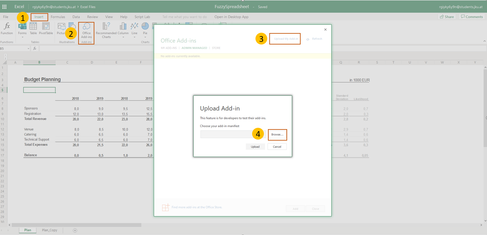
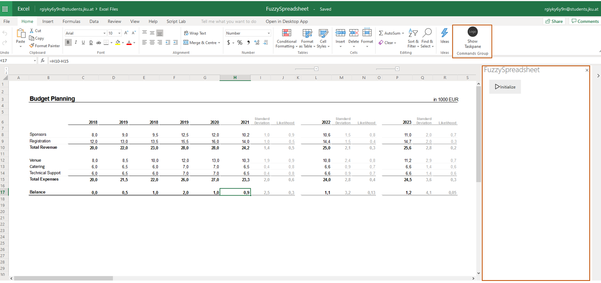
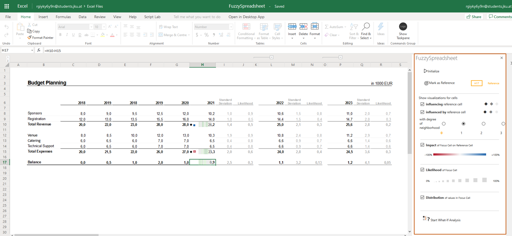

Welcome to Fuzzy Spreadsheet!
Fuzzy Spreadsheet augments traditional spreadsheets with compact in-cell visualizations. To explore the features of
Fuzzy Spreadsheet please follow the instructions.
Pre-Installation Checklist
Any of the latest browsers such as Firefox, Chrome, Edge.
Installation
- Download manifest.xml file and save it locally.
- Open the Excel
Online document in a new tab.
- Go to Insert → Office Add-Ins → Manage My Add-Ins → Upload My Add-In (as shown in Figure 1).
- Upload locally stored manifest.xml file.
- Open Fuzzy Spreadsheet side panel by clicking on ‘Show Taskpane’ (Home → Commands Group → Show taskpane).

Figure 1 - Upload manifest.xml file
Post-Installation Checklist
- Load the add-in and click on the "Initialize" button in the side panel (as shown in Figure 2).
- Select a cell in the worksheet and click on "Mark as Reference Cell" button in the side panel.
- Choose the options "Influencing the reference cell" and "Influenced by the reference cell".
- Change the "degree of neighborhood" to 1.
- This should show the glyphs in the related cells.
- You can then choose to click on "Impact", "Likelihood" and/or "Distribution" and analyze the in-cell encodings
along with the side-panel information (as shown in Figure 3).

Figure 2 - Load add-in and Click on the "Initalize" button

Figure 3 - Select the options to view in-cell encodings